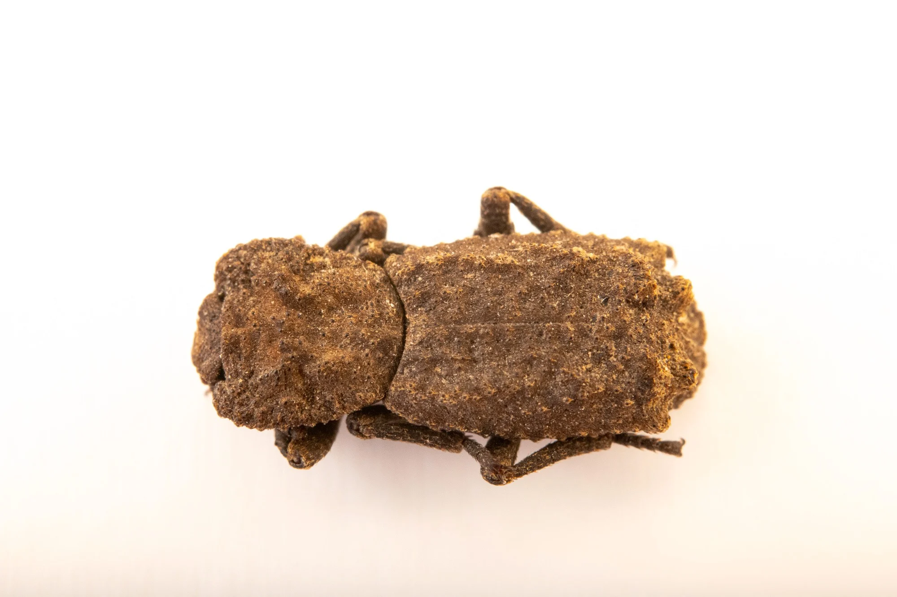
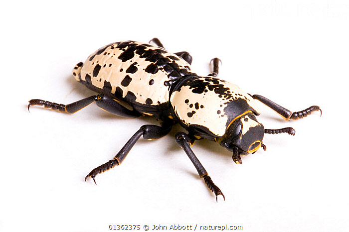
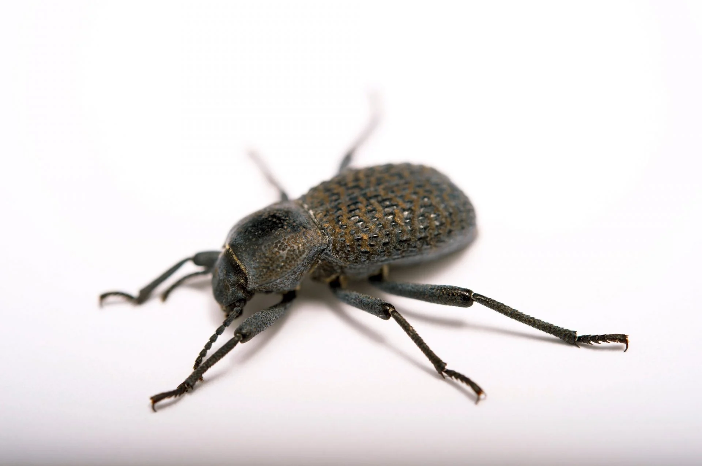

☀️
Ironclad beetles are remarkable insects known for their extreme toughness and ability to survive crushing forces that would destroy most other beetles. As their name suggests, these beetles have an exceptionally hard exoskeleton, which protects them from predators and environmental hazards. Some species are so durable that they have been found alive after being stepped on or even run over by vehicles.
Unlike many beetles, ironclad beetles cannot fly because their wing covers, called elytra, are fused together. This fusion adds extra strength to their bodies, forming a rigid, armor-like shell that resists cracking and breaking. Their exoskeleton is so strong that collectors often struggle to pin preserved specimens without breaking metal pins. Scientists have studied their structure to inspire stronger, more flexible materials for engineering and construction.
Ironclad beetles are typically found in dry forests and desert regions, especially in North America. They spend much of their lives crawling on tree trunks or hiding under bark, where they feed on fungi, lichens, and decaying plant matter. Their slow movement and dark coloration help them blend into their surroundings, reducing the chance of being noticed by predators.
Through their incredible durability and unique adaptations, ironclad beetles demonstrate how evolution can favor strength over speed, making them one of the toughest insects on Earth.


